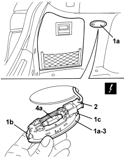

7040G40 LOAD COMPARTMENT LIGHT BULB HOLDER - R R
- Path
- Procedures > 70 FITTINGS > 7040 BODY INTERIOR FITTINGS AND TRIM > 7040G VEHICLE COMPARTMENT LIGHTING SYSTEM > 7040G40 LOAD COMPARTMENT LIGHT BULB HOLDER - R R
- Kind
- repair procedure (removal / refitting; the operation number is the code)
- Applies to
- all engines; all production periods; only with equipment: Station Wagon
- Interactive page
- https://sloeber94.github.io/elrnDB/alfa/159/en/#/939005461
Applies to: all engines; all production periods; only with equipment: Station Wagon
 Removing
Removing
 Refitting
Refitting- Open the tailgate.
1. Release the bulb holder (1a), releasing the flexible retainer (1b) and then the rigid retainers (1c).
2. Disconnect the electrical connection.
Description | Component |
|---|---|
BOOT COURTESY LIGHT |
3. Keep the bulb holder.
4. If necessary, remove the bulb (4a) by releasing it from the side retainers.

Applies to: all engines; all production periods; only with equipment: Station Wagon
Refitting
Removing- Check that the bulb holder and the bulb are not damaged.
- If removed, fit the bulb in place attaching it to the side retainers.
- Connect the electrical connection.
- Place the bulb holder in position and attach the retainers.
- Check that the bulb holder is working.
- Close the tailgate.
Topics linked from this page (1)
Topics that link to this page (17)
- 5505A14 SUPPLEMENTARY JUNCTION BOX IN LUGGAGE COMPARTMENT - R.R
- 5505B55 TAIL-GATE WIRING - R R
- 5580C50 WINDOW BAG MODULE (ONE) LH OR RH - R.R
- 5580H10 PARKING OBSTACLE DETECTION DEVICE ELECTRONIC CONTROL UNIT - R.R.
- 7015A14 TAILGATE - ADJUST CENTRING AND PROFILE - INCLUDES HINGE AND COMPARTMENT SEAL ADAPTATION
- 7015A24 TAILGATE HINGES - REPAIR OR REPLACE WITH TAILGATE REMOVED
- 7015B45 EMERGENCY CONTROL FOR OPENING TAILGATE - R.R.
- 7035C14 FIXED REAR SIDE WINDOW (ONE) LEFT OR RIGHT - R.R INCLUDES CLEANING HOUSING
- 7040B18 LOAD COMPARTMENT LOAD PLATFORM SIDE TRIM ONE LH OR RH - R.R
- 7040B30 L/H OR R/H SIDE SUPPORT (ONE) FOR LOAD PLATFORM COVER BLIND - ARRANGE
- 7040B36 Oddments compartment FLAP on load carrying compartment compartment covering blind SIDE SUPPORT - R.R.
- 7040H10 ROOF PANEL LINING - R.R.
- 7040H16 ROOF PANEL LINING FOR VERSIONS WITH SUN ROOF - R.R
- 7040H68 TAI GATE HOUSING PILLAR TRIM (ONE), LH OR RH - R.R.
- 7065B10 REAR SEAT BELT (ONE), LEFT OR RIGHT - R.R.
- E2520 GLOVE COMPARTMENT LIGHT - BOOT LIGHT - SUN VISOR LIGHT - WIRING DIAGRAM
- E2520 GLOVE COMPARTMENT LIGHT - BOOT LIGHT - SUN VISOR LIGHT - COMPONENT LOCATION